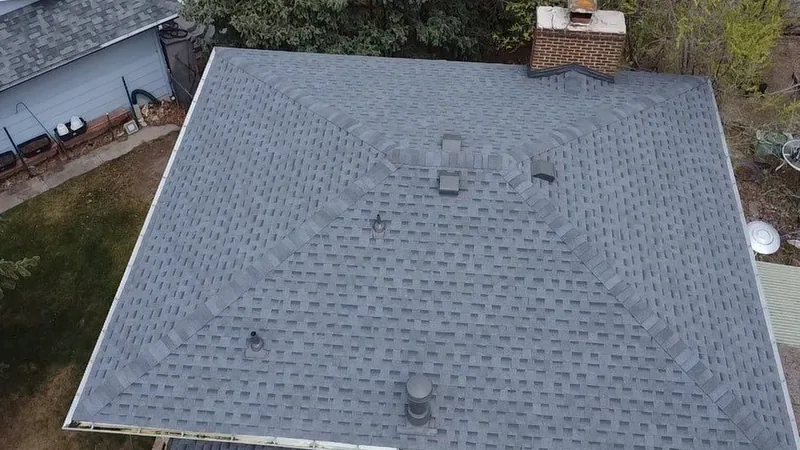

Roofing in Knoxville, TN
Help with your roof insurance claim
Hail or wind got your roof, and now there's a claim to deal with. The claim is yours. What you need from a roofer is clear evidence: dated photos, an itemized estimate, and someone on the roof with your adjuster.

- Family roofing company. Since 2018.
- 4,000+ projects documented. On record, job by job.
- Free inspections. Written, line-by-line prices.
- 24-hour emergency line. Leaks and storm damage, any hour.
- All of East Tennessee. Twelve counties, one phone number.
How it works, step by step
- Free storm damage inspection. We look at every slope, photograph what we find, and tell you whether it's worth a claim. A repair under your deductible is not worth a claim.
- You file. The claim is yours, in your name. We give you dated photos and a written, itemized estimate to send with it.
- We meet your adjuster. On the roof, if you'd like us there, to show the damage and explain the repair scope.
- Hidden damage. When tear-off shows decking or flashing the first estimate missed, we send the insurer additional photos and an itemized estimate for it (that's what a supplement is).
- The repair or replacement, installed to code and to the scope the policy covers.

What we do, and what we don't
We document storm damage, prepare itemized repair estimates, meet your adjuster to explain the damage and repair scope, and provide additional photos and estimates when hidden damage is discovered. Your insurer decides coverage. We do not represent you or negotiate your settlement.
We do not waive or cover your deductible.
You pick the contractor
Your insurer may hand you a list of roofers it works with. You can call one of them, or not. Who works on your house is your decision, and the roofer you hire works for you.
Tennessee also protects you if the claim falls through. If you sign a roofing contract that depends on the claim and your insurer tells you in writing the damage isn't covered, you can cancel until midnight of the third business day after that notice (T.C.A. § 62-6-603). Money you paid, other than for emergency repairs you agreed in writing were needed, comes back within ten business days (§ 62-6-604).
Wind and hail deductibles
Many policies here carry a separate deductible for wind or hail. It's often a percentage of the home's coverage instead of a flat dollar amount, which can make it far bigger than the deductible you remember. Find it on your declarations page before the adjuster comes.
If the damage won't clear that deductible, the inspection still tells you what needs fixing, and you'll get a written price for the repair. After a storm, read what hail does to shingles, and what to do when someone knocks on your door.

Actual cash value or replacement cost
Policies pay for a roof one of two ways, and your declarations page says which you have.
Replacement cost value (RCV) pays what it costs to put the roof back. Many of these policies pay the first check at actual cash value and hold back the rest, called recoverable depreciation, until the work is done.
Actual cash value (ACV) pays the cost of the work minus wear on the old roof. On an older roof that gap can be large, and the gap is yours to cover. Read the page before storm season, not after.
Questions about roof insurance claims
Will my insurance pay for a replacement roof?
It depends on your policy and what caused the damage. Insurance generally covers sudden damage like hail or wind, and usually leaves out wear and age. Your insurer makes that call. What we can give your adjuster is clear, dated photos of the damage and a written scope, so the decision rests on good evidence.
How long does a roof insurance claim take?
It depends on your insurer and how hard the storm hit. After a big hailstorm, adjusters and roofers are booked up for weeks. The parts you control: get the inspection early, file promptly, and keep the photos and the estimate together. Most of the waiting sits between filing and the adjuster's visit, and between the adjuster's report and the first check.
Do I have to use my insurer's roofer?
No. Your insurer may send you a list of roofers it works with, and you can call one of them if you like. You can also hire your own. The roofer you hire works for you, not for the insurance company, and the claim stays in your name either way. Pick the one whose written price and straight answers you trust.
Who pays the deductible?
You do. Your deductible is your share of the claim, and we never waive it, cover it, or rebate it. A roofer who offers to "take care of your deductible" is putting your claim at risk, so walk away. Some policies carry a separate wind or hail deductible. Check your declarations page so the number isn't a surprise.
What if my claim is denied or only partly paid?
Ask your insurer to put the reasons in writing. Then compare them to the photos. If something was missed, we can re-inspect, photograph the specific areas, and help you understand what a re-inspection request should include. Sometimes the denial holds up, and a repair is the right next step.
What is a supplement?
When the old roof comes off, it sometimes shows damage nobody could see from the top: soft decking, rusted flashing, a second layer of shingles. A supplement is the request that goes back to your insurer for that work. We write it and send it with additional photos and an itemized estimate for what the first estimate missed. Your insurer decides whether it's covered.
Book a free storm inspection
Four boxes. We'll call you back to pick a time.
Rather talk? Call (865) 830-8126. Rather text? Send a photo.